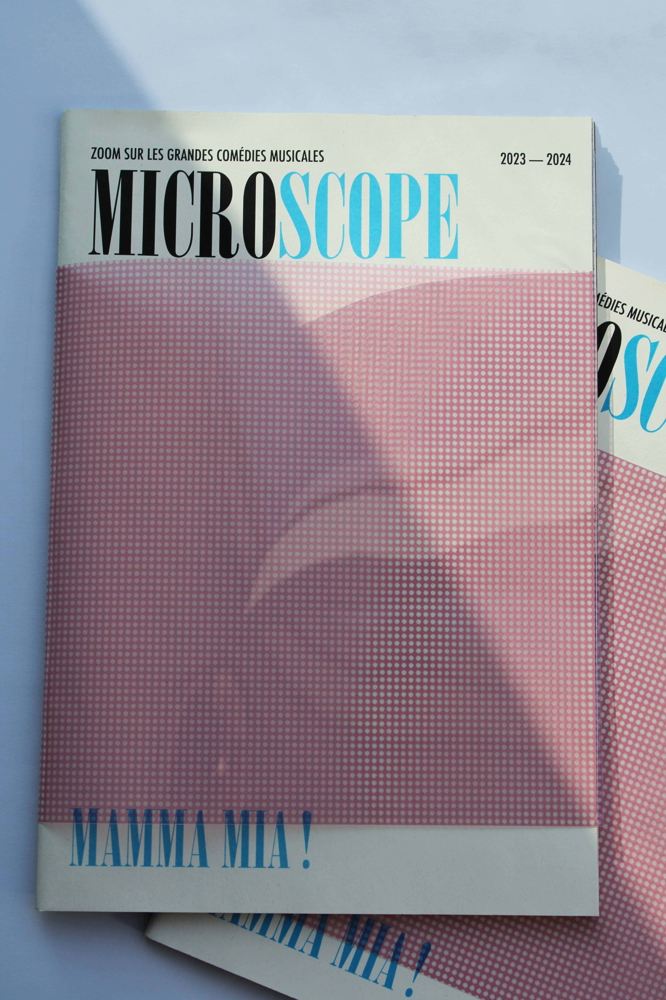
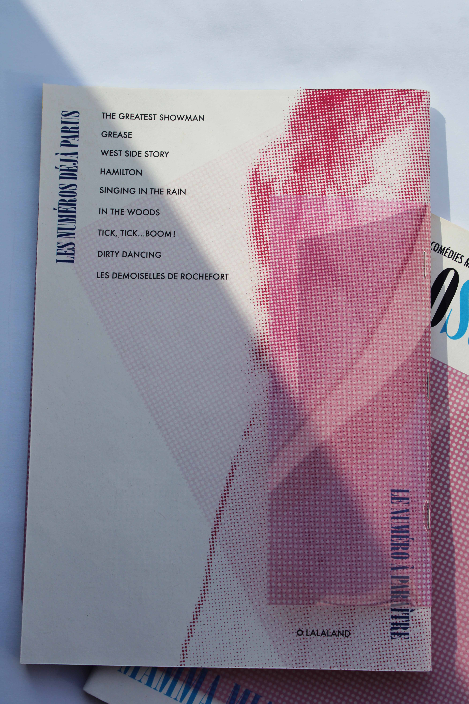
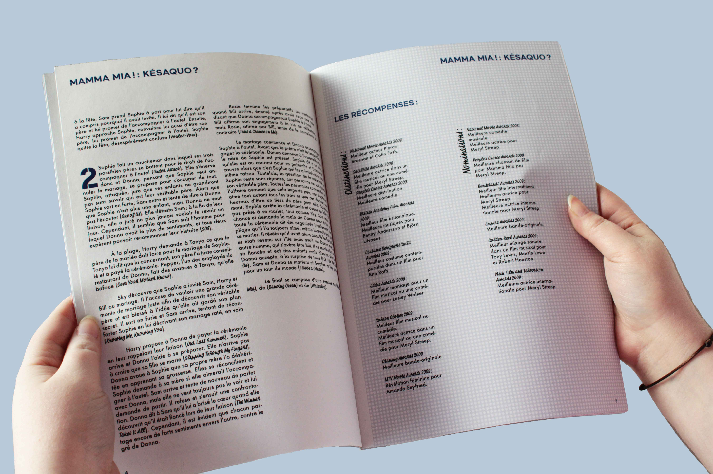
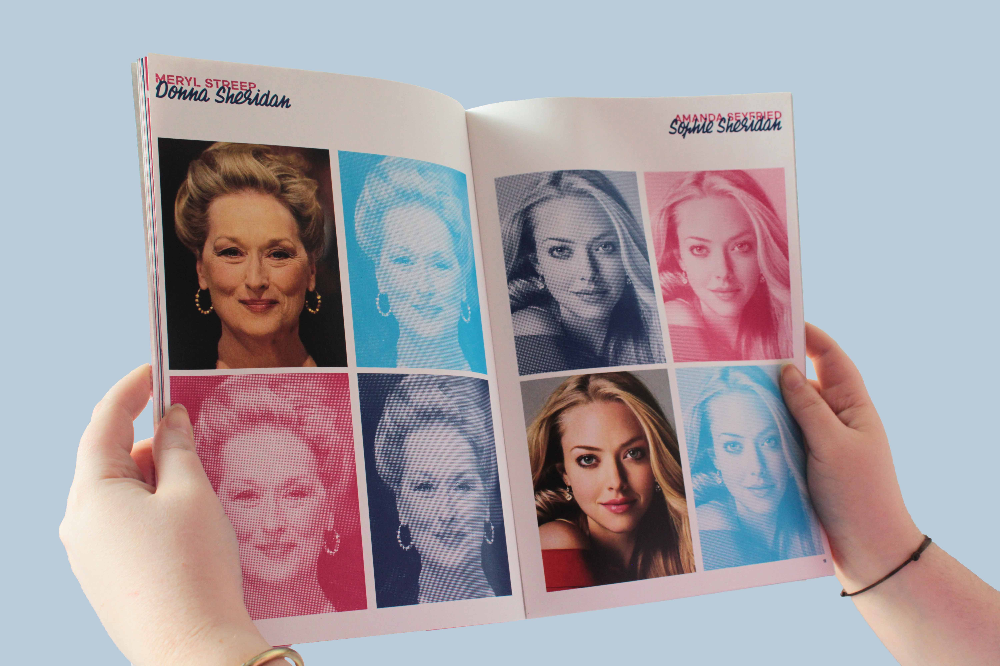
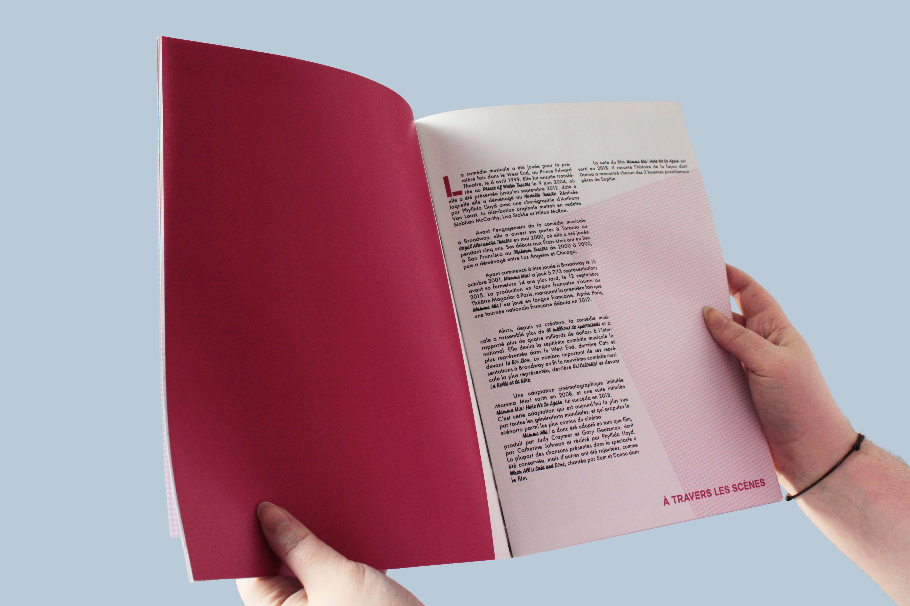
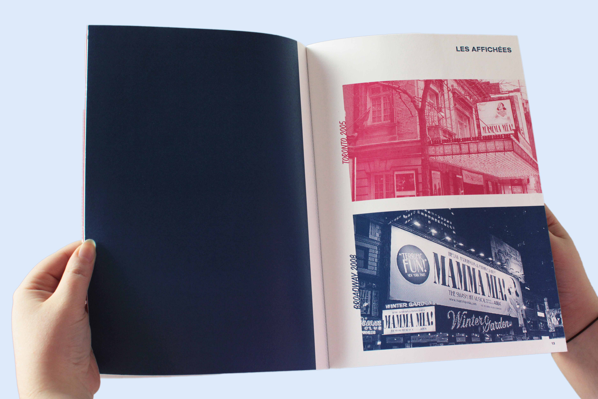
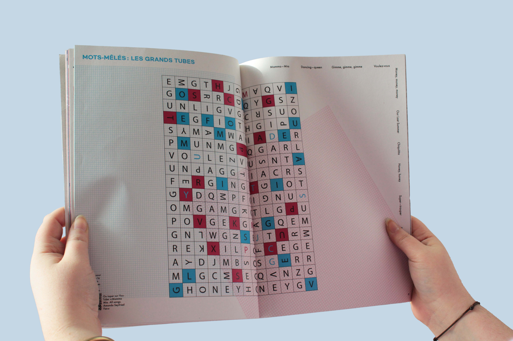
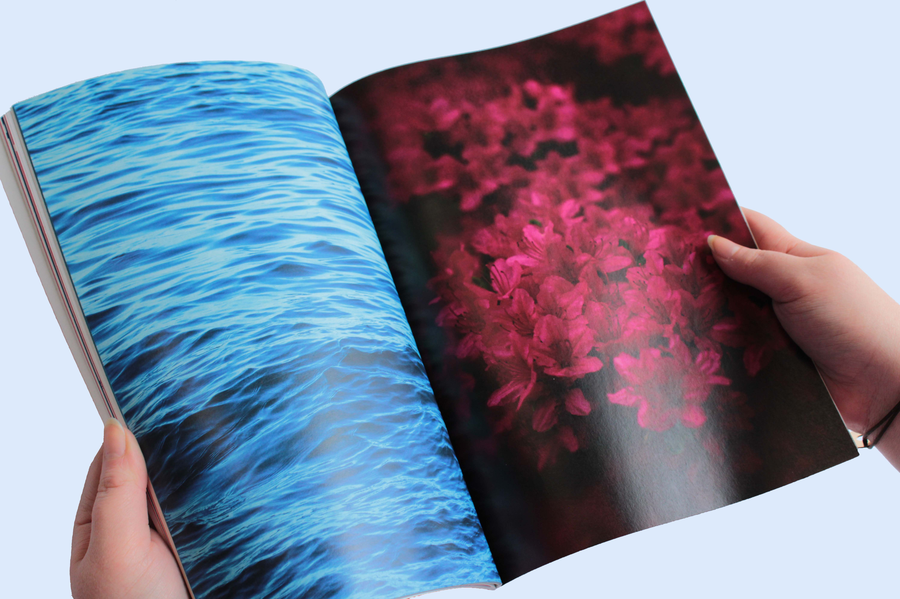

MICROSCOPE
- 21 × 29,7 cm
- 2024
Microscope est un magazine critique des grandes comédies musicales mondiales. Il présente une comédie musicale par numéro et la décortique grâce à différentes rubriques : Synopsis, réinterprétations filmographiques, éléments sur-côtés, ambiance globale, etc…. Ci-contre le numéro sur le film « Mamma Mia ! ».















